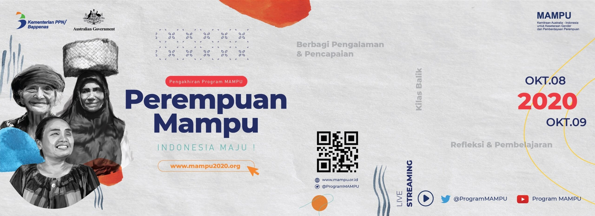
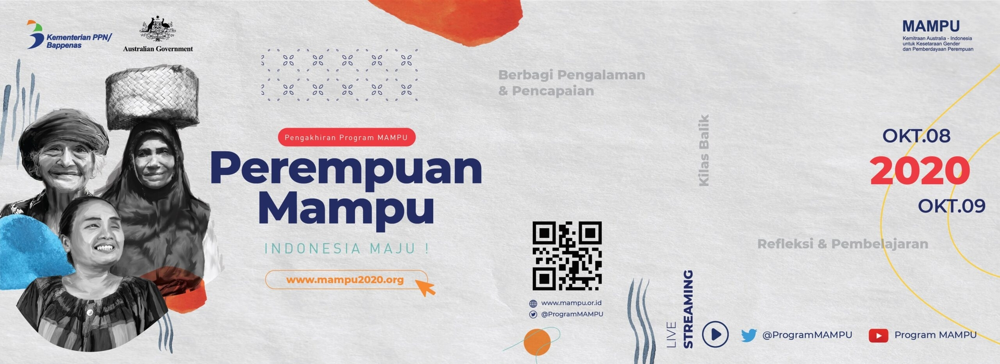

Kerjasama Bilateral
Kerjasama Bilateral adalah hubungan kerja sama yang dijalani antara dua negara untuk saling menguntungkan kedua belah pihak. Bidang-bidang yang sering tersangkut adalah politik, ekonomi, budaya, teknologi, dan pendidikan. Indonesia sendiri telah melakukan kerjasama bilateral dengan 162 negara dan 1 wilayah khusus. Manfaat yang didapatkan adalah perlindungan perbatasan, peningkatan ekonomi, dan peningkatan hubungan antarnegara. Kerjasama ini hanya bisa berlaku dan terjadi setelah kedua negara menandatangani persetujuannya.
Program MAMPU (Maju Perempuan Indonesia untuk Penanggulangan Kemiskinan) adalah salah satu kerjasama bilateral dalam bentuk kemitraan dari Pemerintah Australia dan Amerika. Kemitraan ini bertujuan untuk meningkatkan akses layanan penting seperti perlindungan sosial, penghapusan diskriminasi di tempat kerja, peningkatan wawasan mengenai status kesehatan dan gizi perempuan, dan mengurangi kekerasan terhadap perempuan pagi perempuan miskin di Indonesia. MAMPU telah bekerja di 27 provinsi, lebih dari 150 kabupaten dan kota, dan sudah mencapai lebih dari 1000 desa. Dengan angka ini, terbentuknya juga 1.300 kelompok masyarakat yang terdiri dari sekitar 32.000 perempuan berdasarkan data sistem Agustus 2018.